1. Goal Display Rect
The scene sizes the open net as
goalWidth = min(sceneWidth * 0.48, 420) and
goalHeight = goalWidth / 1.5, then centers it at
{ x: goalLeft, y: rinkTop }.
This documents the algorithm before a goalie sprite participates. The net image is treated as a 1536 x 1024 source image, but vertical shot targeting now bottoms out at source Y 870 instead of the image bottom.
The scene sizes the open net as
goalWidth = min(sceneWidth * 0.48, 420) and
goalHeight = goalWidth / 1.5, then centers it at
{ x: goalLeft, y: rinkTop }.
The joystick outputs xRatio and yRatio
from 0 to 1. Center aim is { xRatio: 0.5, yRatio: 0.5 }.
Up/left move toward 0; down/right move toward 1. Full-down aim maps
to source Y 870.
Horizontal skating adds aim bias only on X:
shooterOffsetX / movementRange is clamped to -1..1,
then multiplied by 1536 * 0.14. Max bias is about
+/-215px in source coordinates.

The final source point is
x = round(clamp(xRatio * 1536 + xBias, 0, 1536)) and
y = round(clamp(yRatio, 0, 1) * 870). The bottom
transparent/lower image area is no longer targetable.
The source point maps back onto the rendered net:
displayX = goalRect.x + goalRect.width * (x / 1536),
and Y still uses source-image coordinates against 1024.
Since source Y maxes at 870, the puck stops at the
mouth of the goal instead of sliding below it.
A shot counts as a goal only when
190 <= x <= 1346 and
140 <= y <= 870. Full-down aim lands exactly on that
bottom edge. The current open net has no post, goalie, puck-size,
velocity, or collision-mask check.